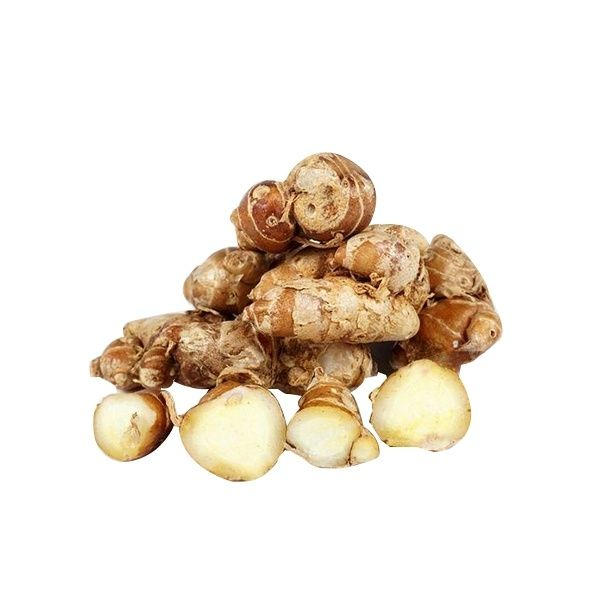

Pemilihan Bahan Herbal
Bahan dipilih dari tanaman herbal berkualitas untuk menjaga karakter alami dan manfaatnya.
pabrik herbal yang menghasilkan berbagai produk jamu alami dari tanaman herbal berkualitas tinggi
Boja Factory merupakan bagian dari ekosistem Boja Group yang berfokus pada proses pengolahan tanaman herbal menjadi produk jamu alami yang berkualitas.
Setiap bahan dipilih dengan cermat untuk menjaga karakter alami rempah dan tanaman herbal.
Dengan pendekatan produksi yang rapi, modern, dan bertanggung jawab, Boja Factory mendukung hadirnya produk herbal yang mudah dinikmati oleh masyarakat masa kini.
Kami tidak hanya memproduksi jamu, tetapi juga menjaga kesinambungan nilai tradisi herbal Indonesia agar tetap relevan, aman, dan dekat dengan gaya hidup sehat sehari-hari.
Setiap produk Boja Factory melewati proses yang tertata agar kualitas bahan, rasa, aroma, dan keamanan produk tetap terjaga.
Bahan dipilih dari tanaman herbal berkualitas untuk menjaga karakter alami dan manfaatnya.
Proses pengeringan dilakukan untuk membantu menjaga kualitas bahan sebelum diracik.
Bahan herbal digiling dan diracik dengan takaran yang konsisten sesuai kebutuhan produk.
Produk dikemas rapi agar lebih higienis, praktis, dan siap sampai ke tangan pelanggan.
Kami menonjolkan bahan herbal yang dekat dengan tradisi Indonesia, dipilih karena karakter rasa, aroma, dan manfaat alaminya.

Membantu memberi sensasi hangat alami dan aroma rempah yang kuat pada racikan herbal.

Dikenal dengan warna keemasan khas dan sering digunakan untuk mendukung daya tahan tubuh.

membantu memberikan rasa hangat pada tubuh serta sering digunakan untuk menjaga stamina dan membantu meredakan rasa lelah.

Temulawak merupakan herbal alami yang dikenal membantu menjaga daya tahan tubuh serta mendukung kesehatan pencernaan.